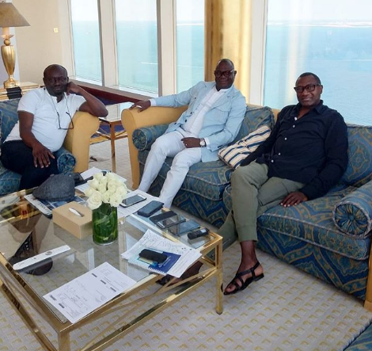
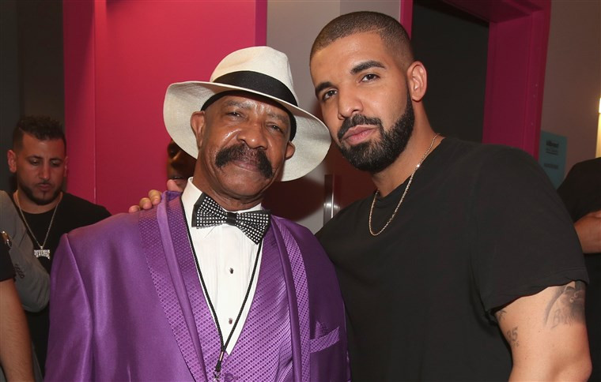
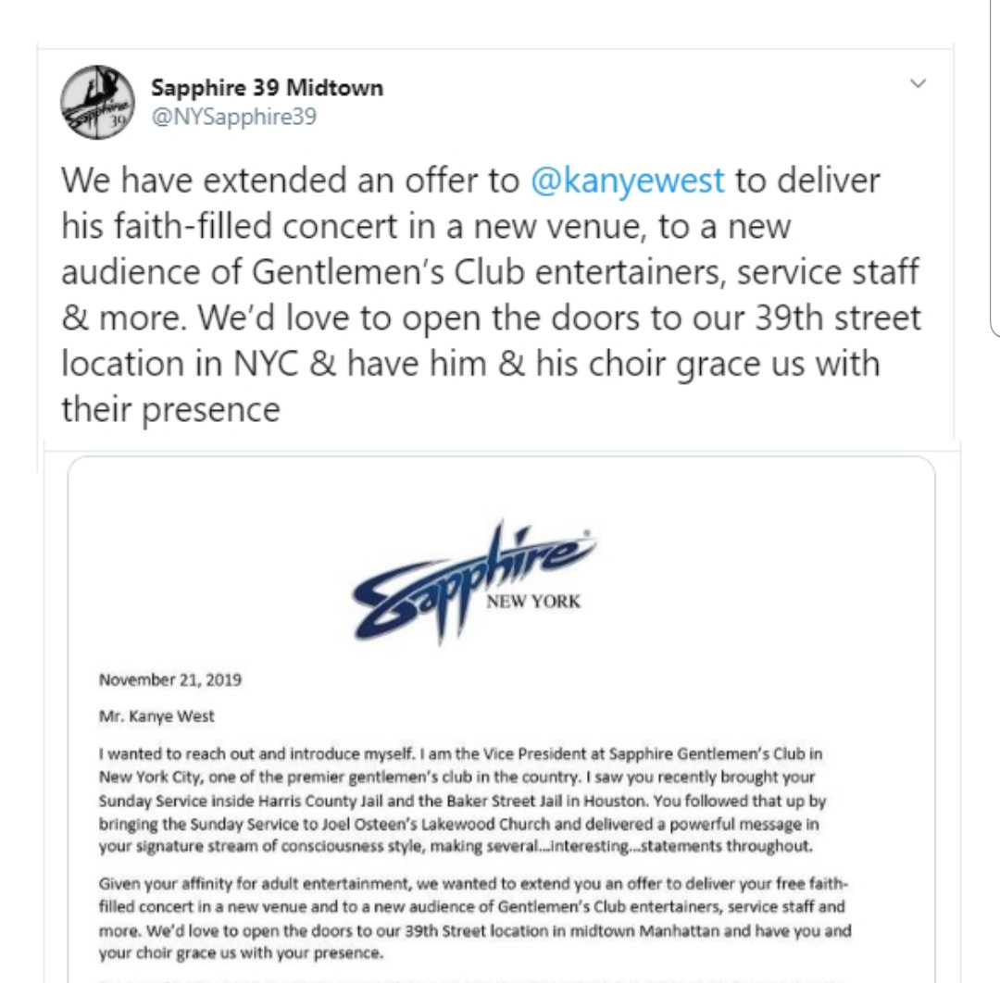
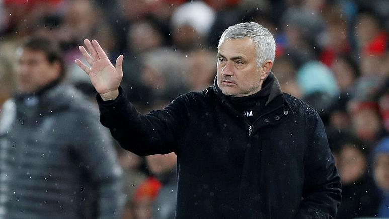

US Vice President Mike Pence makes unannounced trip to Iraq (Photos)
TUS Vice President Mike Pence made an unannounced trip to Iraq to visit US troops ahead of Thanksgiving, landing in the country Saturday, November 23rd amid violent anti-government protests. ...
US Vice President Mike Pence made an unannounced trip to Iraq to visit US troops ahead of Thanksgiving, landing in the country Saturday, November 23rd amid violent anti-government protests.
Pence visited the Al Asad Air Force Base in western Iraq, where he was greeted by the US Ambassador to Iraq and several military officers. He received a classified briefing from the commanding officer on the base and spoke by phone with Iraqi Prime Minister Adil Abdul Mahdi.
On the call, Pence told Mahdi that he traveled to Iraq in part to "extend gratitude to the men and women (of the US military) serving in your country," according to the TV travel pool with the vice president. Mike Pence and his wife Karen Pence later served the troops a Thanksgiving lunch, with the Vice President serving turkey and Mrs. Pence handing out yams.
As service members came up to them, the Pences asked each where they were from and thanked them for their service. Vice President Pence then delivered remarks to about 150 service members in a hanger. "The President and your Vice President and the American people are behind you 100%," Pence said, according to the TV travel pool.
Pence told the service members that the Trump administration was "fighting to secure another pay raise for the men and women in the military," but added "we need Congress to do their jobs," the TV travel pool reported. "Congress should have finished their work months ago but you know that partisan politics and endless investigations have slowed things down,"
Last updated 3 mins ago

'I have concluded interviews on my debut book on business lessons' - Billionaire, Femi Otedola
Nigerian billionaire, Femi Otedola is about to be an author.
Nigerian billionaire, Femi Otedola is about to be an author.
He shared this photo on Instagram today and wrote, 'It’s a wrap! Finally concluded interviews with my friends, Kunle Bakare and Simon Kolawole, on my debut book on business lessons. Interviews spanning 18 months across Lagos, Monte Carlo, Paris, New York, London and now Dubai'.
Last updated 3 mins ago

Drake's dad is looking for love, takes search to reality show
Drake's father, Dennis Graham is reportedly looking for love and he might be taking his search for a soulmate to a reality show. Sources told TMZ that the rich, single fathe ...
Drake's father, Dennis Graham is reportedly looking for love and he might be taking his search for a soulmate to a reality show.
Sources told TMZ that the rich, single father of the successful Canadian rapper is in serious talks to land a show chronicling his search for a soulmate and at least 2 TV networks have agreed he's quite the catch.
Drake
If aired, viewers will be able to catch a glimpse of the benefits of being Drake's father which includes clubbing, driving expensive cars and many others.
Dennis Graham has reportedly had several meetings with his partner and reality TV guru David Weintraub and it was further gathered that there's strong interest from Vice and WE tv. He's expecting a signed deal sometime next week.
Last updated 3 mins ago
New York Strip club invites Kanye West to come host his Sunday Service at their venue
This is a wider card with supporting text below as a natural lead-in to additional content. This content is a little bit longer.
A New York Strip club has invited Kanye West to bring his Sunday Service to their venue.
Sapphire Gentlemen's Club posted an invitation letter on Twitter, requesting for the rapper-turned-gospel singer to come to deliver a concert for entertainers and their service staff.
Alongside the letter, they wrote: 'We have extended an offer to @kanyewest to deliver his faith-filled concert in a new venue, to a new audience of Gentlemen’s Club entertainers, service staff & more. We’d love to open the doors to our doors & have him & his choir grace us with their presence.'

New York Strip club invites Kanye West to come host his Sunday Service at their venueNew York Strip club invites Kanye West to come host his Sunday Service at their venue
It's unclear if Kanye West and his choir will honour the invitation.
Last updated 3 mins ago
Inter Milan coach Antonio Conte advises his players on how to have sex with their partners during the season
Inter Milan coach, Antonio Conte has disclosed that he gave instructions to his players as to how to have sex with their partners in order to stay at their best form on the field of ...
Inter Milan coach, Antonio Conte has disclosed that he gave instructions to his players as to how to have sex with their partners in order to stay at their best form on the field of play.
The ex-Chelsea coach who is looking to end the dominance of Juventus, who are one point ahead of Inter Milan in Serie A, told his players that during the season sex they must not last long and the players must also stay under their partners.
Speaking to L'Equipe in a recent interview, the 50-year-old Italian coach said: 'Competition for me is battle,' 'It is "your death, my life". I am very focused on the fact that in the end there should only be one left standing and I do everything to make it my team.
"During the season, I advise my players to have sex for short periods and with the minimum of effort, and better use positions where they are under their partners. And preferably, with their wives, because if with others, well, that needs extra action."
Last updated 3 mins ago

Tottenham name Jose Mourinho as new boss after Mauricio Pochettino sacked
Jose Mourinho has been appointed the new manager of English football club Tottenham Hotspur, following the sacking of Mauricio Pochettino on Tuesday.
Jose Mourinho has been appointed the new manager of English football club Tottenham Hotspur, following the sacking of Mauricio Pochettino on Tuesday.
The 56-year-old Portuguese won three Premier League titles with Chelsea, and also managed Manchester United. He returns to management for the first time since being sacked by Manchester United in December.
Tottenham announced Mourinho would be their new manager on a contract running until the end of the 2022-23 season.
Spurs Chairman Daniel Levy said in a statement: "In Jose we have one of the most successful managers in football.
“He has a wealth of experience, can inspire teams and is a great tactician. He has won honours at every club he has coached. We believe he will bring energy and belief to the dressing room.”
Despite taking the club to their first Champions League final last season, Pochettino was fired after a poor run of form in 2019, which saw the team winning just six of their last 24 league games.
“I am excited to be joining a club with such a great heritage and such passionate supporters,” Mourinho said. “The quality in both the squad and the academy excites me. Working with these players is what has attracted me.”
Last updated 3 mins ago
The Best Fashion Instagrams of the Week: Céline Dion, Lizzo, and More
If you are looking for a break from the cold, take a cue from Lizzo: This week, the singer headed to Disneyland in warm and sunny California. She dressed up for the occasion in pure Minnie Mouse style perfection...
If you are looking for a break from the cold, take a cue from Lizzo: This week, the singer headed to Disneyland in warm and sunny California. She dressed up for the occasion in pure Minnie Mouse style perfection, including a cartoon merch sweatshirt from the artist Shelby Swain, cycling shorts, and adorable pulled-up polka dot socks. All the way over in Montreal, Céline Dion also had quite the wardrobe moment. For a concert, the singer wore a pair of fringed, XXL-flared cowboy jeans by Ukrainian label Ksenia Schnaider. The Kiev-based designer is responsible for other viral denim creations, like her asymmetrical jeans that launched earlier this year. Fun fact: The daring Dion has worn a pair of those, too!
Of course, back in New York, there was Marc Jacobs. The designer has been having quite the year when it comes to flexing his fashion muscles on the ’gram. This week, he channeled The Wizard Of Oz with a full-green look that included some shimmery Sies Marjan pants, and a pair of platform boots to anchor the ensemble.
Another person we’ve had our eye on is model Ashley Graham, whose maternity wardrobe has been standout, chic, and fun. This past week, the mom-to-be uploaded a selfie of herself grooving in a green bodycon dress and a knotted, striped top. Graham’s celebratory dance was in honor of a new mystery project that she has coming up—but we’ll have to wait and see what that endeavor is all about.
Until then, see the best fashion Instagrams of the week.
Last updated 3 mins ago
Oshiomhole mocks Saraki and others, says Dino Melaye is 20,000 feet below ground level and will need a miracle to be re-elected
Adams Oshiomhole slammed those that defected from the ruling All Progressives Congress (APC) he heads as he discussed the challeneges they are facing at the National Executive ...
Adams Oshiomhole slammed those that defected from the ruling All Progressives Congress (APC) he heads as he discussed the challeneges they are facing at the National Executive Council (NEC) meeting of the party.
According to the former Governor of Edo State, Former Senate President Bukola Saraki and 15 other lawmakers who defected to the People's Democratic Party (PDP) felt they could burn the APC down but they lost their reelection bid.
Oshiomhole who stated that there are no miracles in election, also took a swipe at Dino Melaye who he said is 20,000 feet below ground level and is hoping for a miracle at the rerun election on November 30.
“I also believe it is significant to point out all those who rebelled against this party, those who sort to burn us down, those who decamped at critical moment believing they could destabilize us and we won’t have enough time to make up as led by Senator Bukola Saraki and fifteen others; all sixteen of them, by the special grace of God, the Nigeria electorates have chosen to punish them with their PVCs and ballot papers. They were all voted out and APC’s senators were voted in to replace them.
“There is one that is still struggling, and as we speak, he is 20,000 feet below ground level and he is hoping that there will be a miracle that will bring him to that level and climb him to the senate.
“I believe by the special grace of God under your leadership (looking at Buhari), I believe that deficit (Dino Melaye) there are no miracles in elections, especially if it is free and fair.
“God willing, by the end of the month, God’s will in Kogi State will be done; the 16th stubborn one will go the way the other fifteen went,” Mr Oshiomhole told the crowded hall graced by party members and pressmen.
He also threw jab at some members of the party “who rode on the back of President Buhari to get money for their elections and still went back to decamp and attack the presidency and the institution of our party.”
Adams Oshiomhole also blamed the loss recorded in Zamfara, Oyo, Bauchi, and Adamawa elections on internal party crisis. He told party members to stop supporting candidates of the opposition party even if their allies in the APC loses.
“The issue of Bauchi and Adamawa, these are the states we have sitting governors. Looking at the result and listening to our officers from those states, it is very clear that these losses can easily be attributed to internal fighting (disunity) within the party in those respective states leading to internal sabotage.
“I think the lesson to learn from it is that no matter how aggrieved we are, the worst of our candidate embarking in an election should be preferred to an angel emerging as an opposition. It is my prayer that our leaders and cadres will recognise that once the primaries are done, everybody can’t win but whoever emerges should be supported. The spirit of party calls for a commitment to stand by whoever prevails, however, imperfect the process may be,” he said.
Last updated 3 mins ago
Inside Jewelry Designer Sonia Boyajian’s Dream of an L.A. Store
Sonia Boyajian is an unusual breed of artisan. An unapologetic maximalist, she’s long favored statement jewelry and expressive hand-craftsmanship that’s elusive in the category.
Sonia Boyajian is an unusual breed of artisan. An unapologetic maximalist, she’s long favored statement jewelry and expressive hand-craftsmanship that’s elusive in the category. So as the pendulum swings back in the favor of bold baubles, as seen on the Spring ’20 runways of Gucci, Brandon Maxwell, and Ulla Johnson, among others, it seems apt that Boyajian is unveiling a Los Angeles flagship. Tucked away on La Brea Avenue, the unadorned storefront belies the compelling artistry happening within its four walls—a window into the fantastical world that Boyajian has created.
When Boyajian began outgrowing her former Hollywood workspace, and decided it was time for a retail venture of her own, she turned to longtime friend Pamela Shamshiri of Studio Shamshiri, whose notable work with designers includes Irene Neuwirth’s Melrose Place jewel box. Boyajian and Shamshiri took cues from Georgia O’Keeffe’s Santa Fe studio (with subtle nods to Donald Judd), replicating the colors, textures, and angles, sometimes to exacting detail. The six month project was truly collaborative. “The storyboard they presented to me was my jewelry as fixtures and reimagined as elements throughout the space: door knobs, sconces, pendants. They wanted to use it all,” Boyajian says. “They added such a sense of refinement to my kookiness.”
Sonia Boyajian
Sonia BoyajianPhoto: Courtesy of Sonia Boyajian
The cavernous space, which spans over 5,000 square feet, features ample showroom and studio space in which Boyajian can both work and entertain. Awash in soothing blush tones, the front room boasts sky high ceilings from which a custom-made Calder-like mobile and one-of-a-kind light fixtures and pendants hang, all of which were created by Boyajian to mimic some of her more elaborate designs. Jewelry is carefully merchandised in cubby holes dotting the walls above custom built-ins and seating that mimic O’Keeffe’s own studio benches, down to the fabric. Boyajian even made the ceramic and white porcelain trays, animal figurines, and ring holders that accessorize the space and bring an intimate feel to the oversized setting.
The square footage of the studio has afforded Boyajian the luxury of bringing every last step of her creative process under one roof. Downstairs, at the far end of the space sits her ceramic studio with two kilns, where all of her pieces get shaped, baked, and glazed by hand. They then travel up a curving flight of stairs to her lofted workspace, which is broken out into equal parts work stations and archival display. The small room where she welds, carves, and assembles the individual parts she’s created sits just across from the room that now houses her expansive 18-year archive.
Boyajians jewelry on display
Boyajian’s jewelry on displayPhoto: Courtesy of Sonia Boyajian
“When I shop for something I want to know who made it, how it’s made, and where it’s made,” she says. “So I think it’s important that my customer sees that we’re making it right in back and upstairs, and that my customers can come into the ceramic studio.”
Last updated 3 mins ago
You didn’t bring up bill to regulate police brutality – Ruggedman slams Senator Abbo
Veteran rapper, Ruggedman has slammed Senator Elisha Abbo after being spotted in a viral video pledging his support for the bill to regulate social media.
Veteran rapper, Ruggedman has slammed Senator Elisha Abbo after being spotted in a viral video pledging his support for the bill to regulate social media.
The lawmaker representing Adamawa North Senatorial District who spoke during the senate's plenary session on the bill titled ‘Protection from Internet Falsehood and Manipulation 2019’ which recently passed its second reading, called for its quick passage into law on grounds of the country being consumed if the menace of fake news is not contained.
“The issue of fake news in this country, if it’s not regulated is a cancer waiting to consume all of us,” Abbo said.
“Even conventional media that are regulated are suffering from falsehood. If we cannot regulate the spread of falsehood, it will consume all of us tomorrow.”
Last updated 3 mins ago
Spain's top women footballers go on strike over pay dispute
pain's top women football players went on strike on Saturday in a dispute over working conditions and minimum wage.
Spain's top women football players went on strike on Saturday in a dispute over working conditions and minimum wage.
The two-day strike action resulted in the cancellation of eight matches scheduled to take place over the weekend.
Just under 200 players from 16 different clubs in the country's Women's First Division voted in October to go on strike after negotiations between the different bodies collapsed.
Players are demanding that the annual minimum wage for full-time contracts be increased to €16,000 while that of part-time contracts be boosted to €12,000. They are also calling for a maternity package and paid holidays.
The Association of Women's Football Clubs (ACFF) argues however that smaller clubs could not afford to increase the minimum salary from the current €8,000 per year.
The UD Granadilla Tenerife club, whose team was meant to clash with RCD Espanyol on Saturday, said in a statement that they "respect the position of the players to support the strike."
SPONSORED CONTENT
From Wagner to Broadway: A musical journey with Terfel at the Sydney Opera House
1
Musica, in partnership with Rolex
"Staff, technical body and management wish that a fruitful and positive agreement will soon be reached between all the parties involved, for the sake of women's football and generations to come," it added.
Last updated 3 mins ago
Kendall Jenner Pulls the Celebrity-Approved “Casual Birkin” Move
Call Kendall Jenner the queen of the chic schlep. Yesterday in New York City, Kendall Jenner stepped out—en route to Gigi Hadid’s farm in Pennsylvania for a long weekend—lugging a Hermès Birkin bag that was the size of a small toddler.
Call Kendall Jenner the queen of the chic schlep. Yesterday in New York City, Kendall Jenner stepped out—en route to Gigi Hadid’s farm in Pennsylvania for a long weekend—lugging a Hermès Birkin bag that was the size of a small toddler. The model carried the gigantic Birkin while wearing a relatively pared-back outfit: an oversize flannel, a graphic T-shirt, and Dickies Girl pants that retail for a humble $29.99. The carryall, meanwhile, is the travel-size Birkin Hac 50 Vintage Ardennes Black Leather Weekend bag, which is currently available on resale sites for roughly $10,000 dollars.
Carrying a Birkin is a power move in itself: It’s a bag that instantly screams “made it” luxury (and possibly an off-shore bank account). Case in point? Jenner’s sister Kylie and her mother Kris Jenner clutching their matching Birkins on a private plane. But carrying a Birkin while wearing more casual attire is an even bigger power move. Look to Jennifer Lopez, who has long dressed her Birkins down with spandex and sports bras, even using them as gym bags. Back in the day, Kate Moss used a white incarnation as a diaper bag when her daughter was a mere tot. Pulling the “nonchalant Birkin” move signals that the Birkin bag with a multiple digit price tag is, well, just another bag for the wearer. Either way, Jenner’s gargantuan bag is a refreshing break from the tiny bag trend. (Unless, she's carrying a hundred micro bags inside of it?) A Birkin is a bag that’s in it for the long haul—far beyond a weekend trip.